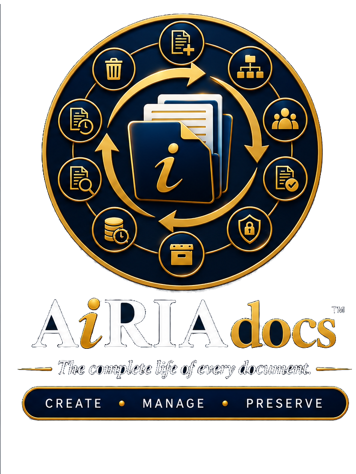
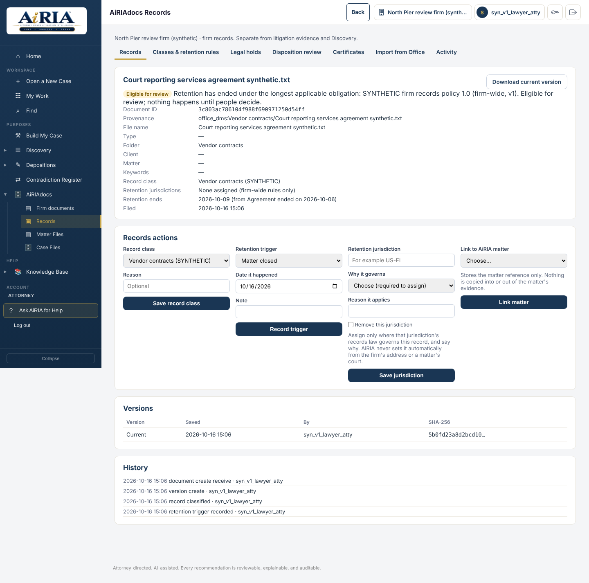
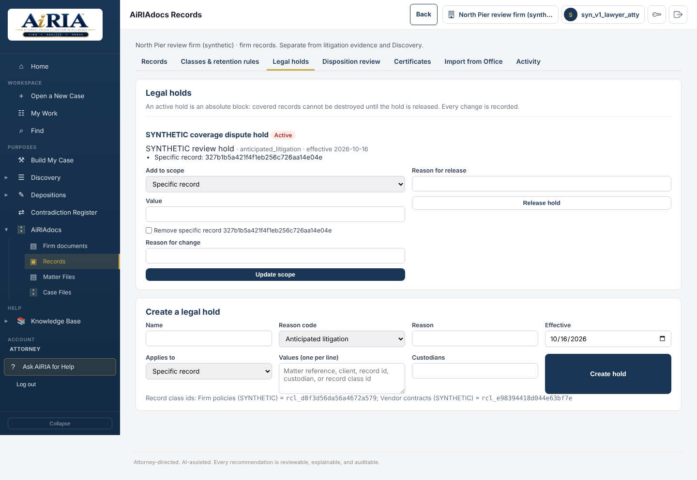

Easy intake
Capture the document without turning every save into a catalogue project. Confirm what matters and move on.
 Consult with an AiRIA Expert
Consult with an AiRIA ExpertWithin the AiRIA platform
Records & Information Management
AiRIAdocs brings the firm’s documents and records into an organized, searchable lifecycle. Capture correspondence and office information, find it through familiar folders and meaningful details, preserve version history and manage the record through retention, legal hold, archive and authorized disposition.

One platform · integrated module
AiRIA connects the legal work; AiRIAdocs supports the information that keeps the practice running. Documents can be saved, found and governed through their lifecycle, with the distinction between litigation Evidence and office records preserved.
Capture the document without turning every save into a catalogue project. Confirm what matters and move on.
Each document gets a durable identifying card at intake—the modern equivalent of a DMS library card—so the firm can retrieve and manage it over time.
Known values are pre-populated from context. Users confirm or correct what is needed rather than recreating the same fields by hand.
Browse by client, matter, and folder views people already understand. Folders are navigation for people; metadata carries lasting identity underneath.
Metadata-first · Folder-familiar
Metadata retrieval sits underneath the familiar folder experience. Lifecycle, retention, and preservation stay behind everyday filing so ordinary users keep a familiar path while the firm gains durable control.
CREATE • MANAGE • PRESERVE
Capture the document and establish its card without turning save into records administration.
Organize, retrieve, and keep working versions while identity and context remain intact.
Retention, hold, archive, and disposition stay governed—visible when needed, not as everyday friction.
AiRIA manages litigation intelligence. AiRIAdocs manages the firm’s information lifecycle for office documents and records. Where the two meet, connections are meant to be governed so litigation Evidence and ordinary office records are not silently mixed.
Explore the AiRIA platform →Save with context. Capture the document’s identity and relevant client, matter and record details so the firm can find it again.
Preserve deliberately. Apply documented retention obligations and legal holds. Keep the rule’s jurisdiction, source and verification associated with the decision.
Close the lifecycle responsibly. Review eligible records, require independent approval for disposition and retain the certificate and activity history.


Private demonstrations now available
See one matter from evidence to work product. Ask for a demonstration of Find, Build My Case, Discovery, Depositions, Pleadings and AiRIAdocs. Follow a source through the workflow and see how the team’s work stays connected.
Consult with an AiRIA Expert